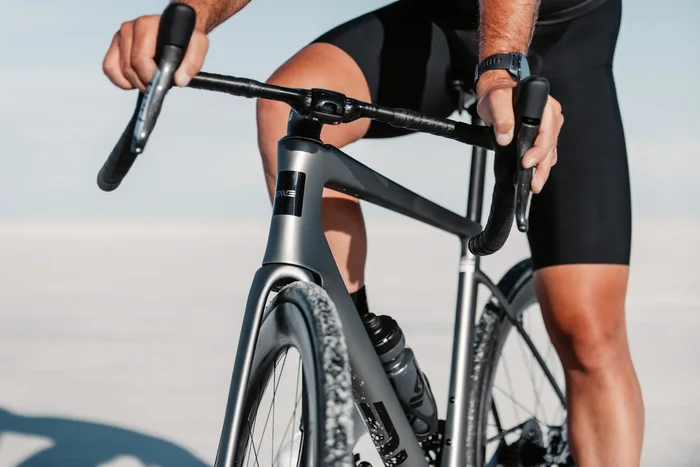
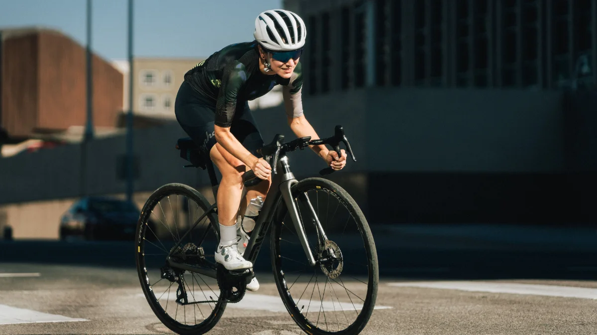

Find den rette
cykel og det
rigtige udstyr.
Vi guider dig til, hvilken cykel der passer til dine behov, og hvilket udstyr du skal bruge – så du kan komme godt i gang uden at bruge penge på unødvendige ting.
Alt du skal vide
om cykler og udstyr.


En god start kræver ikke alt.
01 / Cykelvalg
Komfort før fart
Begynd med en cykel, du sidder godt på. En landevejscykel med en mere oprejst kørestilling kaldes ofte en endurance-cykel. Den kan være et godt sted at begynde.
- Prøv cyklen, og få hjælp til størrelse og indstilling.
- Du skal kunne nå bremserne og styre sikkert.
- Vælg gear, der gør bakker overkommelige.
- En brugt cykel kan være en mulighed, hvis standen er undersøgt.
Du behøver ikke en dyr carbonramme for at begynde. Pasform og en cykel i god stand er vigtigere.
02 / Det nødvendige
Pak det vigtigste
- En hjelm, der sidder stabilt og er indstillet til dig.
- Vandflaske og en lille snack.
- Behageligt tøj efter vejret og eventuelt et ekstra lag.
- Mobil, lygter og mulighed for at komme hjem.
- Pumpe, en passende reserveslange og dækjern – og viden om at bruge dem.
Almindelige flade pedaler er fine fra start. Cykelsko og klikpedaler, hvor skoen låses fast, kan vente.
Gå til tjeklisten03 / Køb og pleje
Hold cyklen klar
Ved køb af en brugt cykel: spørg til service og skader, og få gerne en cykelmekaniker til at se den efter, hvis du er i tvivl.
- Se efter skader på ramme og dæk.
- Prøv bremser og gear før en tur.
- Kontrollér dæktryk efter dækkets og fælgens anvisninger.
- Hold kæden ren, og brug kædeolie efter producentens vejledning.
Hvis noget føles løst, bremser dårligt eller lyder forkert, så få det undersøgt før afgang.